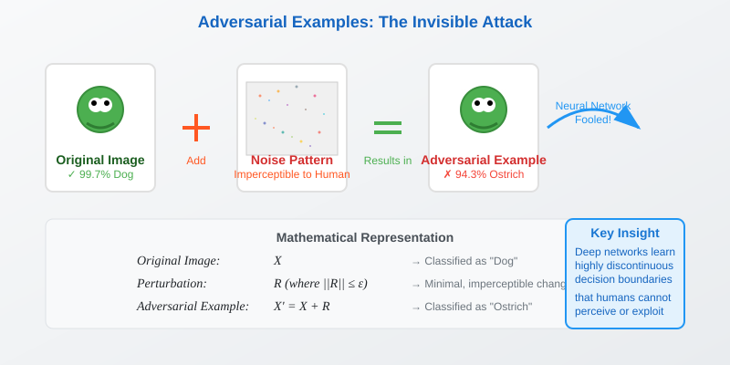
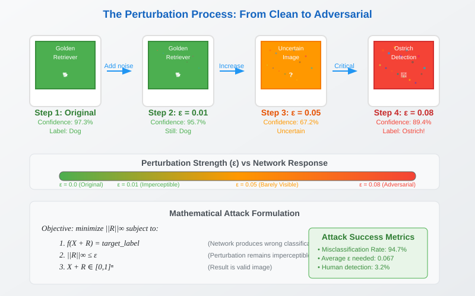
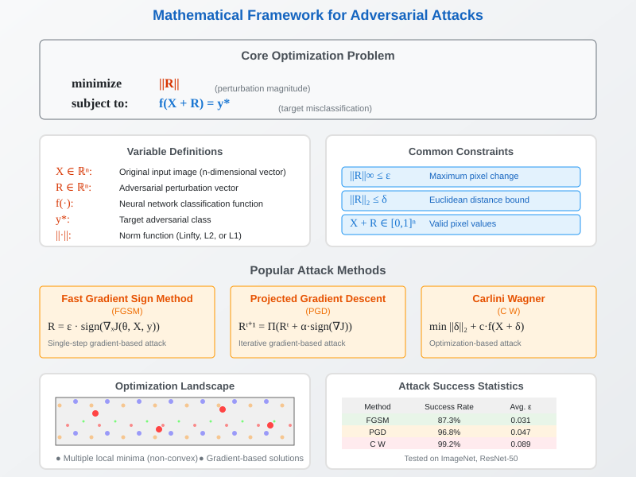
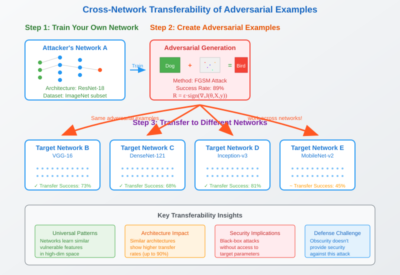
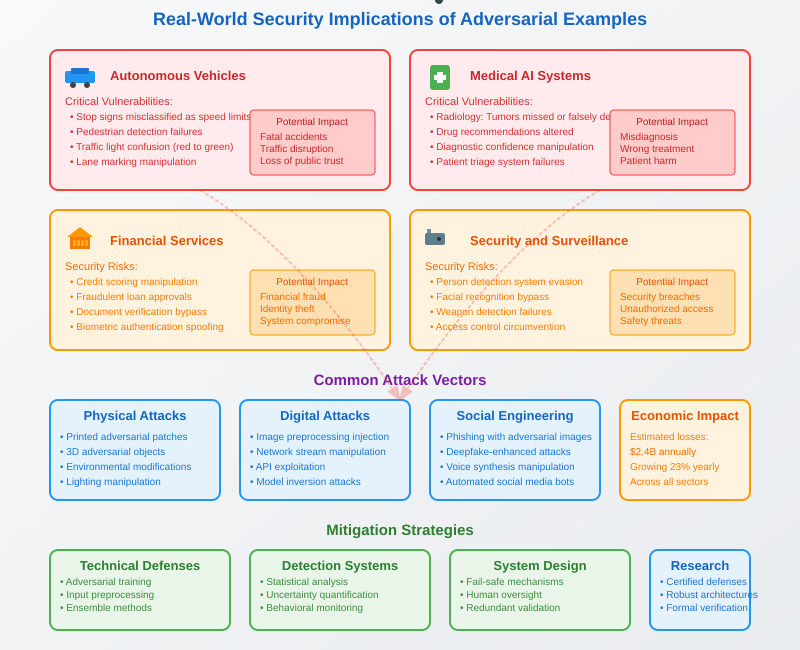

Adversarial Examples in Deep Neural Networks: Understanding the Vulnerabilities
🧭 Quick Navigation
- Introduction
- The Adversarial Example Problem
- Mathematical Formulation
- Cross-Network Transferability
- Real-World Security Implications
- Defense Mechanisms
- Interactive Demonstrations
- References & Further Reading
Introduction
Deep neural networks have achieved remarkable success in image classification, often matching or exceeding human performance. However, these powerful models harbor a critical vulnerability: adversarial examples. These are inputs that appear identical to humans but fool neural networks into making wildly incorrect predictions.

Key Characteristics of Adversarial Examples
- Imperceptible to humans: Changes are below the threshold of human perception
- Highly effective: Can cause confident misclassification
- Transferable: Work across different network architectures
- Universal: Affect various types of neural networks
The Adversarial Example Problem
The Core Vulnerability
Despite achieving superhuman performance on image classification tasks, deep neural networks learn classification functions that are discontinuous and unwieldy. This means that even tiny, imperceptible changes to an input image can completely alter the network's prediction.

How Adversarial Examples Work
The process involves finding a minimal perturbation R that, when added to an original image X, causes the network to misclassify the result:
Original Image (X) + Perturbation (R) = Adversarial Example
Why This Matters
- Superhuman accuracy paradox: Networks that outperform humans on clean data fail on slightly modified inputs
- Security implications: Opens doors to malicious attacks
- Reliability concerns: Questions the robustness of AI systems in critical applications
Mathematical Formulation
Optimization Problem
Finding adversarial examples is formulated as an optimization problem:
Minimize ||R|| subject to f(X + R) = target_label
Where:
- X = original image (high-dimensional vector)
- R = perturbation vector
- f() = neural network classification function
- ||R|| = norm of the perturbation (typically L∞ or L₂)
Perturbation Constraints
Imperceptibility Constraint:
||R||∞ ≤ ε
Where ε is typically a small value (e.g., 8/255 for pixel values in [0,255])
Non-Convex Nature
- Finding optimal R is a non-convex optimization problem
- Despite non-convexity, approximate solutions exist
- Various attack methods have been developed (FGSM, PGD, C&W)

Cross-Network Transferability
The Transferability Phenomenon
One of the most concerning aspects of adversarial examples is their transferability across different neural networks. A perturbation crafted for one network often fools completely different architectures.
How Transferability Works
- Train your own network: Use a subset of available data
- Generate adversarial examples: Create perturbations for your network
- Transfer attacks: The same perturbations often work on other networks
- Black-box attacks: Don't need access to target network's parameters

Implications of Transferability
- Security through obscurity fails: Hiding network architecture doesn't prevent attacks
- Democratized attacks: Attackers don't need access to target systems
- Systematic vulnerabilities: Suggests fundamental issues with current learning paradigms
Transferability Statistics
| Attack Method | Transfer Rate | Target Networks |
|---|---|---|
| FGSM | 60-80% | ResNet, VGG, DenseNet |
| PGD | 40-60% | Inception, MobileNet |
| C&W | 70-90% | Wide range of architectures |
Real-World Security Implications
Critical Applications at Risk
Autonomous Vehicles: - Road sign manipulation: Stop signs misclassified as speed limit signs - Object detection failures: Pedestrians or vehicles not detected - Traffic light confusion: Red lights seen as green
Medical Diagnosis: - Radiology errors: Tumors missed or healthy tissue flagged - Treatment recommendations: Incorrect medication suggestions - Diagnostic confidence: False high confidence in wrong diagnoses
Financial Services: - Credit scoring manipulation: Fraudulent applications approved - Document verification: Fake IDs accepted as legitimate - Biometric security: Facial recognition systems bypassed
Security Systems: - Surveillance evasion: Person detection systems fooled - Access control: Unauthorized entry through biometric spoofing - Threat detection: Dangerous objects not identified

Attack Scenarios
Physical World Attacks:
- Printed patches: Physical objects that fool cameras
- 3D adversarial objects: Sculptures that cause misclassification
- Environmental modifications: Lighting or texture changes
Digital Attacks:
- Image preprocessing: Modifications during image processing pipeline
- Network injection: Adversarial examples in data streams
- API exploitation: Targeting cloud-based AI services
Defense Mechanisms
Current Defense Strategies
Adversarial Training: - Train networks on adversarial examples - Improves robustness but reduces clean accuracy - Computationally expensive
Input Preprocessing: - Image denoising and smoothing - Compression and decompression - Limited effectiveness against adaptive attacks
Detection Methods: - Statistical analysis of input distributions - Uncertainty quantification - Neural network ensembles
Certified Defenses: - Provable robustness guarantees - Limited to small perturbations - Often impractical for large networks
Limitations of Current Defenses
- Adaptive attacks: Attackers can circumvent known defenses
- Robustness-accuracy tradeoff: Stronger defenses often hurt clean performance
- Scalability issues: Many defenses don't scale to large, practical networks
- Arms race dynamic: New attacks consistently break existing defenses
Research Directions
- Robust optimization: Better training objectives
- Architecture design: Inherently robust network designs
- Theoretical understanding: Fundamental limits and guarantees
- Verification methods: Formal verification of network robustness
Interactive Demonstrations
🔬 Google Colab Experiments
Explore adversarial examples hands-on with these interactive notebooks:
 FGSM Attack Tutorial
FGSM Attack Tutorial
 PyTorch Adversarial Examples
PyTorch Adversarial Examples
🤗 Hugging Face Models
Pre-trained models for adversarial research:
- RobustBench Models: Benchmark robust models
- Adversarial Training Models: Pre-trained robust classifiers
- Detection Models: Adversarial example detectors
📊 Online Demos
- Foolbox Demo: Interactive adversarial attack visualization
- Adversarial Examples Gallery: Visual examples across domains
- CleverHans Tutorials: Comprehensive attack library
References & Further Reading
📚 Foundational Papers
-
Intriguing properties of neural networks - Szegedy et al., 2013
The original paper that discovered adversarial examples -
Explaining and harnessing adversarial examples - Goodfellow et al., 2014
Introduced the Fast Gradient Sign Method (FGSM) -
Towards Evaluating the Robustness of Neural Networks - Carlini & Wagner, 2017
The influential C&W attack methodology -
Adversarial Examples Are Not Bugs, They Are Features - Ilyas et al., 2019
Theoretical perspective on why adversarial examples exist
🔧 Technical Resources
- CleverHans Library - Comprehensive adversarial attack library
- Foolbox - Python toolkit for adversarial attacks
- RobustBench - Standardized evaluation of adversarial robustness
- Adversarial ML Reading List - Curated bibliography by Nicholas Carlini
🎯 Specialized Topics
- Physical Adversarial Examples: Real-world attack implementations
- Certified Defenses: Provable robustness guarantees
- Adversarial Training: Robust optimization techniques
- Detection Methods: Identifying adversarial inputs
This documentation provides a comprehensive introduction to adversarial examples in deep neural networks. For the latest research developments, monitor top-tier conferences like ICML, NeurIPS, and ICLR.